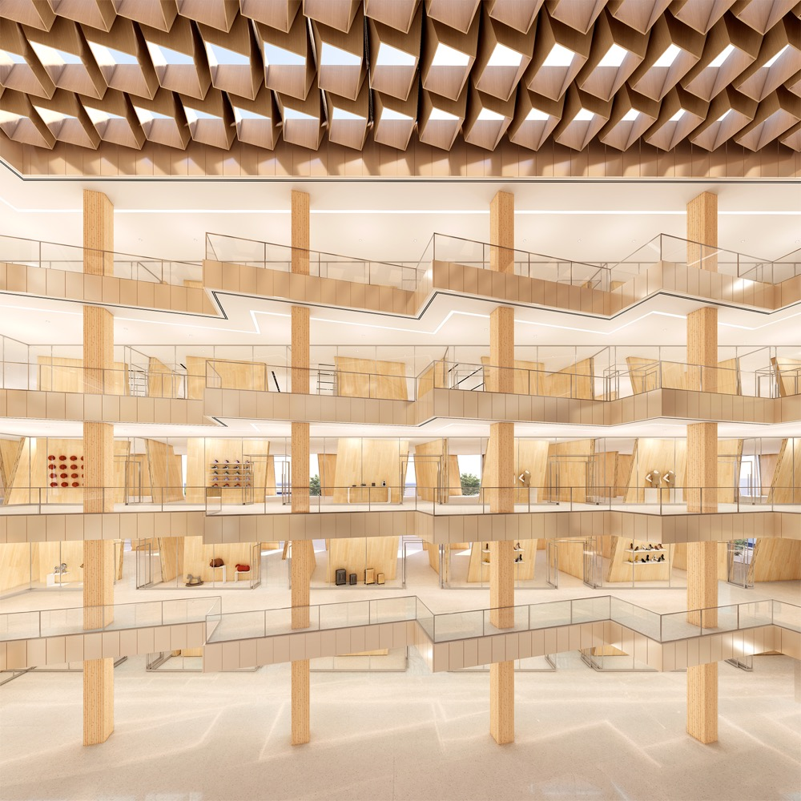
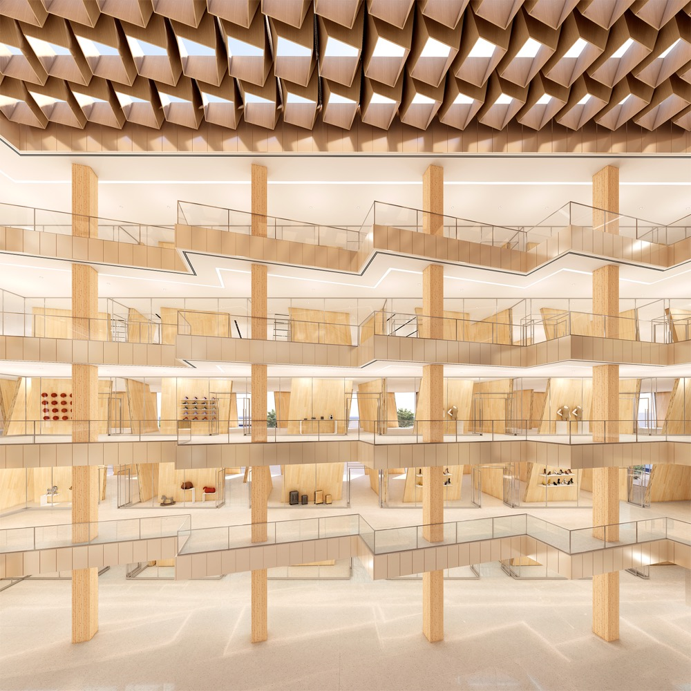

Spira Silva explores how contemporary timber construction can redefine the typology of the high-rise. At the core of the project is a simple but transformative idea: beginning with a single cross-laminated timber (CLT) panel and allowing its natural ability to bend and warp to generate the building's architectural and structural expression.
The design begins with a single CLT panel—a standardized prefabricated element that, when allowed to bend and warp according to its natural material behavior, becomes the generator of the building's form. This warping creates a spiraling motion that defines the tower's silhouette, producing terraces, carved interiors, and a dynamic shifting profile as it rises.
The tower's facade is composed of these warped CLT panels arranged in a rhythmic pattern, creating depth and shadow play throughout the day. Each panel serves both structural and expressive purposes—bearing load while also defining private terraces for residential units above and shaded outdoor spaces for retail below.
 

At the base, a multi-story podium houses retail and community programs, anchored by a central atrium that draws natural light deep into the building. The timber structure is left exposed throughout, celebrating the warmth and tactility of wood while showcasing the precision of contemporary mass timber engineering.
The project imagines a future where mass timber is not only an ecological alternative to steel and concrete but a catalyst for new spatial and formal possibilities in high-rise design.